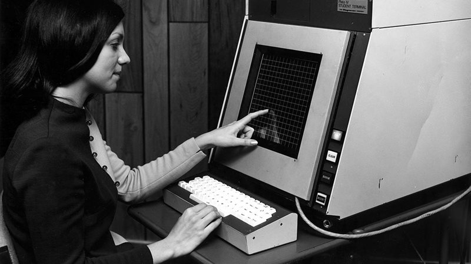

LCD: controlling light
A liquid crystal display controls light passing through its pixels. In a typical computer monitor, a backlight supplies illumination, liquid crystals regulate transmission, and color filters produce the visible colors. Active-matrix TFT circuitry controls the pixels. Thin panels helped LCDs serve laptops and desktop monitors. Contrast, viewing angles and response depend on the panel design.

Plasma: another flat-panel route
In 1964, Donald Bitzer, H. Gene Slottow and Robert Willson developed a plasma display at the University of Illinois for the PLATO educational computer system. Plasma panels use tiny gas-discharge cells to generate light. Fujitsu released a full-color plasma display unit in 1992. This branch became important in large-screen displays, showing that flat panels had a history beyond LCD.

Later developments
Many monitors sold as LED monitors are LCDs with LED backlights. Mini-LED refines that backlight with smaller LEDs and local dimming zones; the image-forming panel remains LCD. Plasma and LCD continued along different commercial paths: Panasonic ended its plasma-panel production in December 2013. The broader lesson is that size, manufacturing and application needs influence which technologies continue to develop.